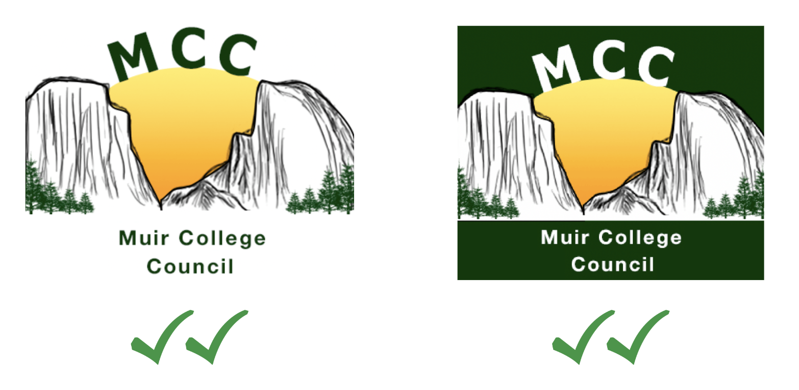
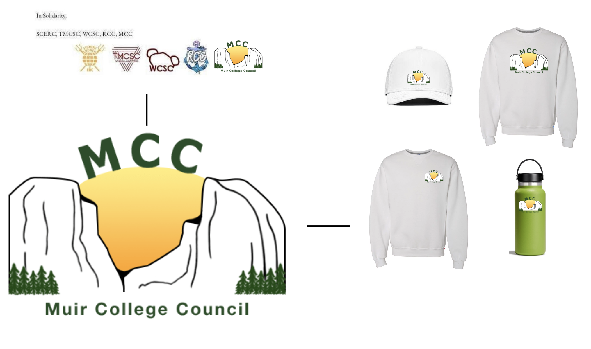

A creative opportunity to help my college and leave my mark long after I graduate? - Sign me up!
Overview
Within UCSD there are 7 colleges. Upon acceptance, students are assigned one of these colleges to call their home throughout their time at UCSD. John Muir College (aka Muir) is named after the outdoorsman, John Muir. He is known as the “Father of National Parks.” Although Yosemite was not his official home, Yosemite was home to him. Muir was the college I was most interested in, and assigned to my freshman year!
One of Muir's student organizations, Muir College Council, advertised a logo competition on their Instagram and it caught my attention. The competition would give me an opportunity to practice more graphic design and I thought it would be nice to help out my college...not to mention I'd get to tell people, "I designed that ü§ì" if I won.
üéâ Let's get working on the new logo! üéâ
Day 1
Who is Muir College Council (MCC)?
Prior to this competition, I knew very little about MCC. I visited their website and Instagram account to learn more about their organization and help brainstorm new logo ideas.
Through information I gathered, I learned that MCC focuses on advocating for and helping the Muir student community. Since they are a part of John Muir College, their branding is nature inspired and at times, involves landmarks from Yosemite National Park.
Ideating - Lo-fi Sketches
To end Day 1, I did some quick sketches that I would build off of during Day 2!
Day 2
More Ideating - Lo-fi Sketches pt.2
Here are more logos I ideated based off sketches and research from Day 1.
Analyzed other College Councils' Logos
Since UCSD is split up into 7 colleges, there are 6 other college councils on campus. I analyzed other college councils' logos to see what my design would be compared to, and to get a better idea of what was expected from me.
Similarities I noticed between all the other college councils' logos were that they either incorporated a landmark of the college or utilized the college's logo.
Mid-fi Logos
After comparing my logos alongside the other college councils' logos, I created mid-fi versions of the one's I thought would look best.
Logo Option 1
Logo Option 2
Mid-fi Testing
I ended up preferring Logo Option 2 over the harsher appearance of Logo Option 1. Logo Option 2 conveys a more balanced and friendly feeling through its subtle arching sunset that connects the two mountains, complemented by how the text acts as borders for the logo.
Mid-fi Iteration
So far, I had been designing my logo to be a square shape. I noticed the error in doing so when I went to test my mid-fi logo designs. Even though the size of the image and "MCC" in the logo were not an issue, the "Muir College Council" text I had at the bottom was too spread out to fit in the profile picture's circle shape.

To fix this issue of the text being cut off, I centered the "Muir College Council" text.
Day 3
3 Final Logos

In the end, I thought it'd be best to submit 3 different versions of the logo:
A green logo with centered, white text to use for their social media profile pictures.
A white logo with centered, green text to give variety and use across various mediums.
A transparent logo with elongated, green text to use when signing documents and for potential merch.
Logo Explanation
Side-by-Side Comparison
ü•≥ Submitted Logos & Waiting for Results! ü•≥